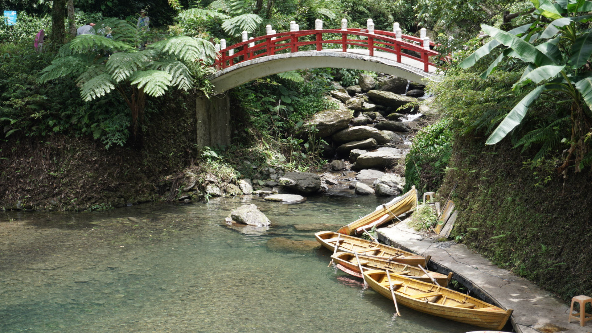
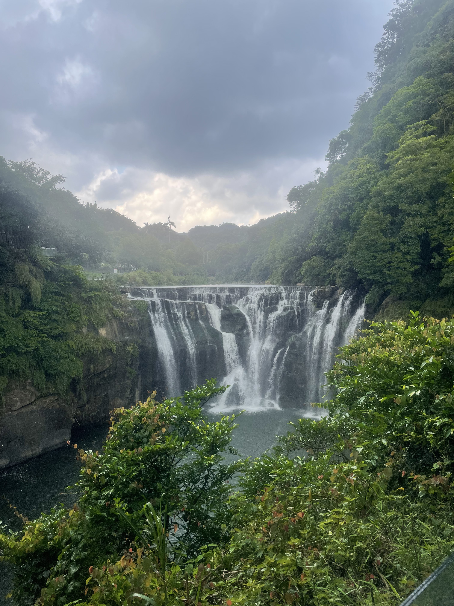
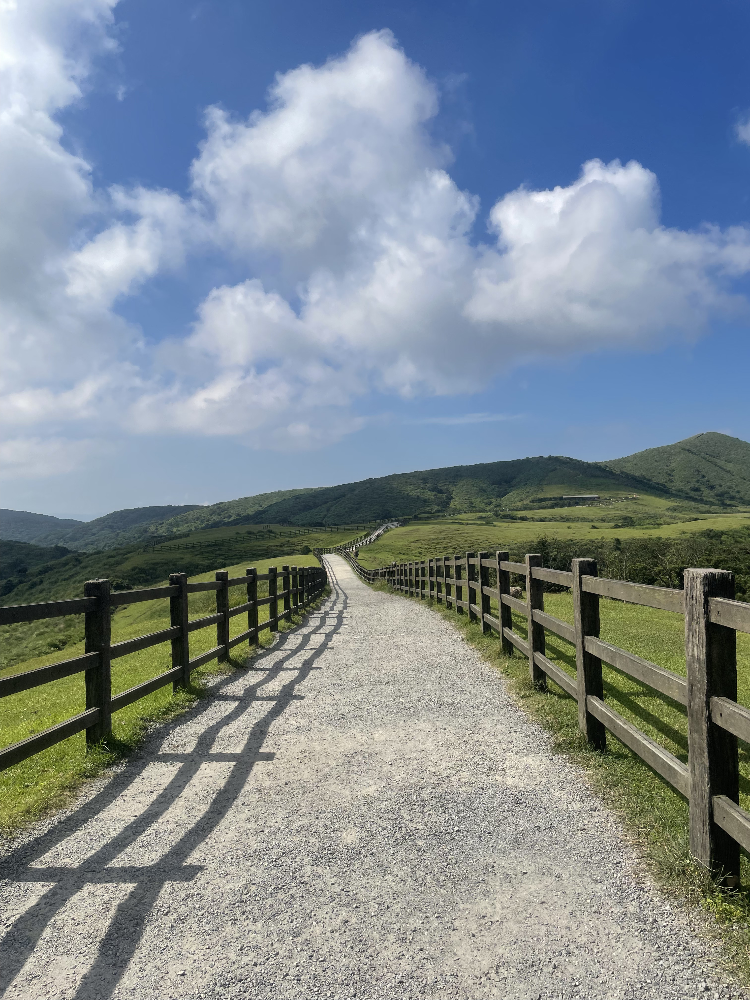
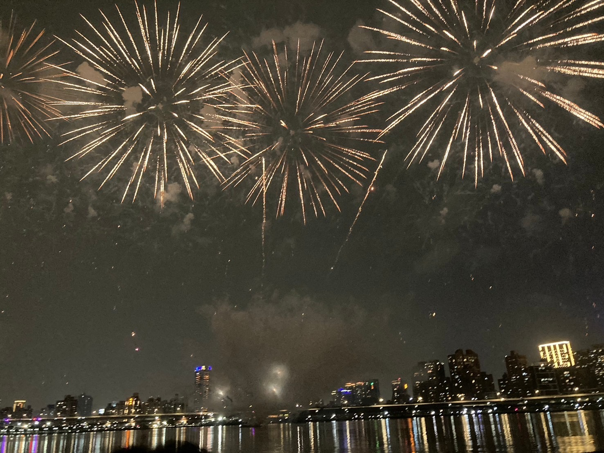
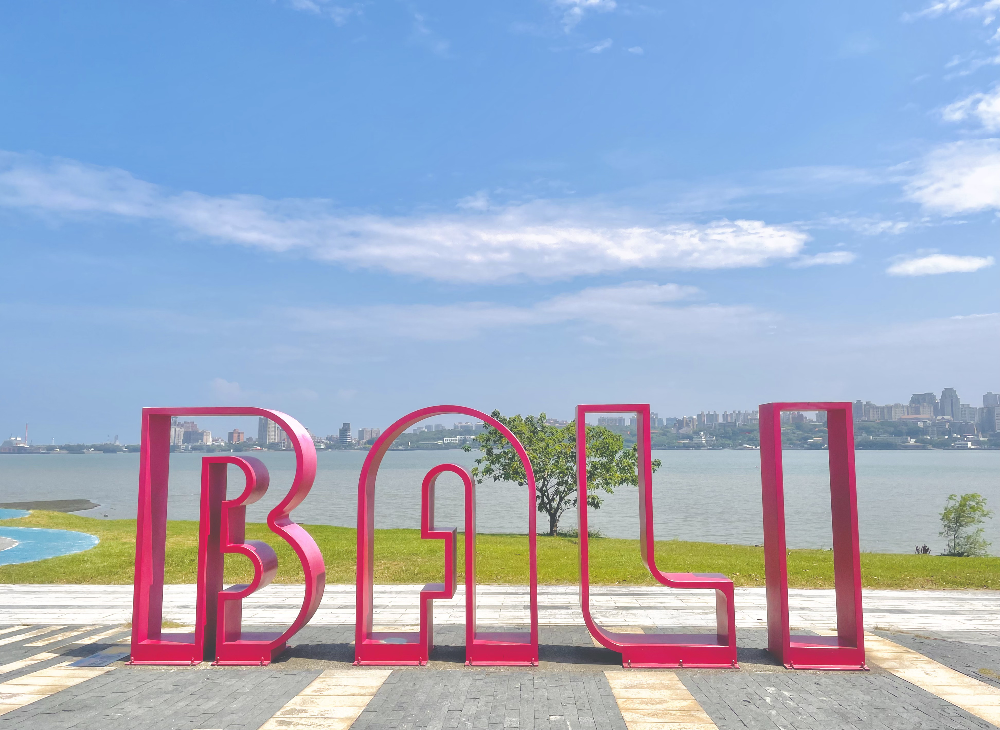

自然景觀前五名
1

雲仙樂園
在山林間的一座樂園，彷彿置身人間仙境，是個遠離城市喧囂最佳的秘境。
2

十分瀑布
隱身於深林中，瀑布被霧氣環繞，水流自懸崖傾瀉而下，激起水花，形成壯麗的景觀。
3

擎天岡
一望無際的草原，與藍天交織成一幅美麗的畫，牛群的點綴更為其增添了生命力。
4

大稻埕碼頭
城市的一隅，保留著開闊的河岸風光，一年一度的煙火慶典，在空中留下絢麗的色彩。
5

八里左岸碼頭
騎著腳踏車，微風輕拂過臉頰，彷彿獲得了片刻的喘息時間。